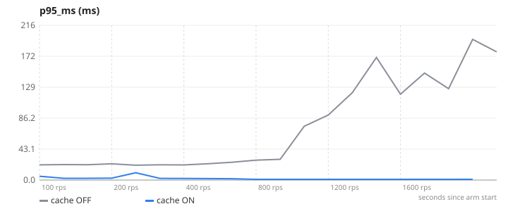
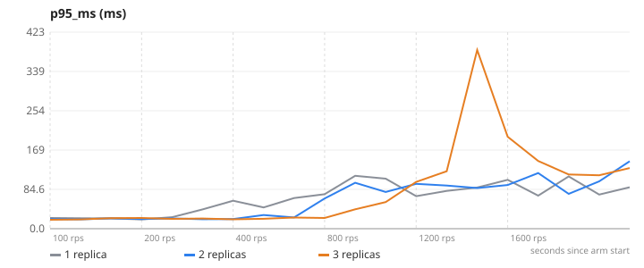
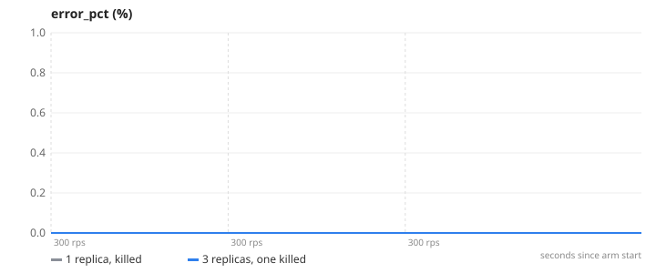
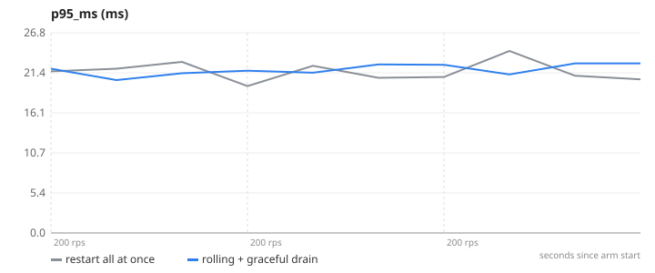
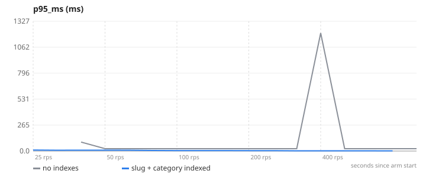
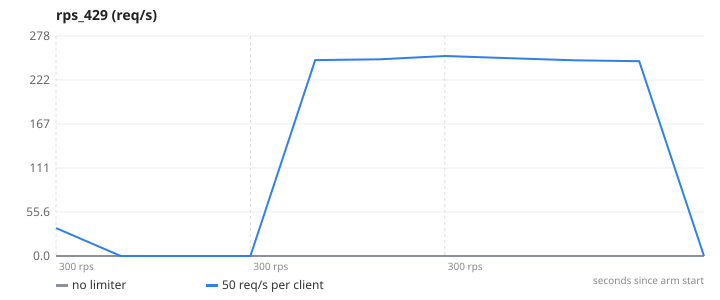
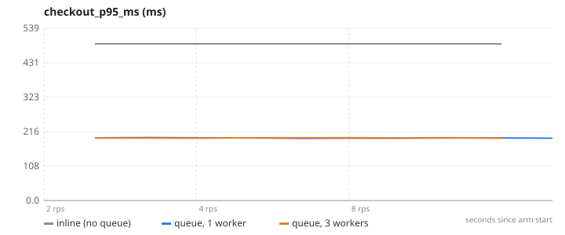
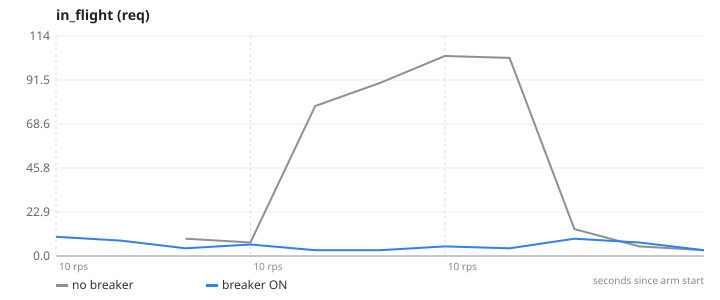
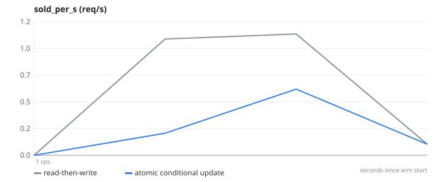

Each experiment changes one thing in a real e-commerce app, runs the same load against both arms, and reports what moved. Generated by make experiment; numbers are medians over repeats on one laptop unless a report says otherwise.
How much latency and throughput does cache-aside buy on the catalogue read path?
| cache OFF | cache ON | |
|---|---|---|
| max RPS with p95 < 300 ms | 814 | 1542 |
| p95 at 400 req/s | 25.1 | 1.7 |
| Mongo ops/s at 400 req/s | 390.5 | 4 |
| cache hit rate (avg) | – | 99.3 |

full report · generated 2026-11-10
How does maximum sustainable throughput change with 1, 2 and 3 app replicas?
| 1 replica | 2 replicas | 3 replicas | |
|---|---|---|---|
| max RPS with p95 < 300 ms | 313 | 603 | 827 |
| p95 at 400 req/s | 62 | 39.6 | 22.9 |
| p95 at 800 req/s | 97.2 | 91.5 | 66.6 |
| peak app CPU (sum of replicas) | 100.1 | 198.2 | 296.8 |

full report · generated 2026-11-10
What do users see when one app instance is killed mid-traffic, with 1 replica vs 3?
| 1 replica, killed | 3 replicas, one killed | |
|---|---|---|
| requests failed | 56.2 | 0 |
| average throughput over the run (req/s) | 106.6 | 256.9 |

full report · generated 2026-11-10
How many user requests fail during a v1 → v2 deploy, naive vs rolling, under steady 200 req/s?
| restart all at once | rolling + graceful drain | |
|---|---|---|
| requests failed during the run | 0.3 | 0 |
| replicas on v2 at the end | 3 | 3 |

full report · generated 2026-11-11
What do indexes on slug and category do to lookup latency and Mongo work at 50k products?
| no indexes | slug + category indexed | |
|---|---|---|
| max RPS with p95 < 300 ms | 360 | 358 |
| product-by-slug p95 at 100 req/s (ms) | 24.3 | 4.5 |
| Mongo documents scanned per second at 100 req/s | 2441220.8 | 190.1 |

full report · generated 2026-11-11
When one client sends 300 req/s, what happens to normal users with and without a limiter?
| no limiter | 50 req/s per client | |
|---|---|---|
| normal users' p95 (ms) | 3.5 | 3.8 |
| normal users' requests rejected (fraction) | 0 | 0 |
| abuser's requests rejected (fraction) | 0 | 0.8 |
| peak Mongo ops/s | 784.1 | 458 |

full report · generated 2026-11-11
What happens to checkout latency when the 300 ms post-order work moves to a queue, and how does worker count affect queue depth?
| inline (no queue) | queue, 1 worker | queue, 3 workers | |
|---|---|---|---|
| checkout p95 as the user sees it (ms) | 490.1 | 185.4 | 184.8 |
| peak queue depth (jobs) | 0 | 128 | 0 |
| worst p95 time a job waited (s) | 0 | 60 | 60 |

full report · generated 2026-11-11
With the payment provider hanging mid-run, what do checkout latency and the catalogue's latency look like with and without a breaker?
| no breaker | breaker ON | |
|---|---|---|
| checkout p95 over the whole run (ms) | 3037102.4 | 2004.5 |
| slowest checkout (ms) | 4886643.8 | 2221012.2 |
| peak requests stuck in flight | 103 | 9 |
| worst 15 s checkout error rate (%) | 0 | 100 |

full report · generated 2026-11-11
With one unit in stock and 200 simultaneous buyers, how many units get sold with read-then-write vs an atomic conditional update?
| read-then-write | atomic conditional update | |
|---|---|---|
| rounds (1 unit in stock each) | 20 | 20 |
| units actually sold | 44 | 20 |
| buyers told "sold out" | 3956 | 3980 |

full report · generated 2026-11-11